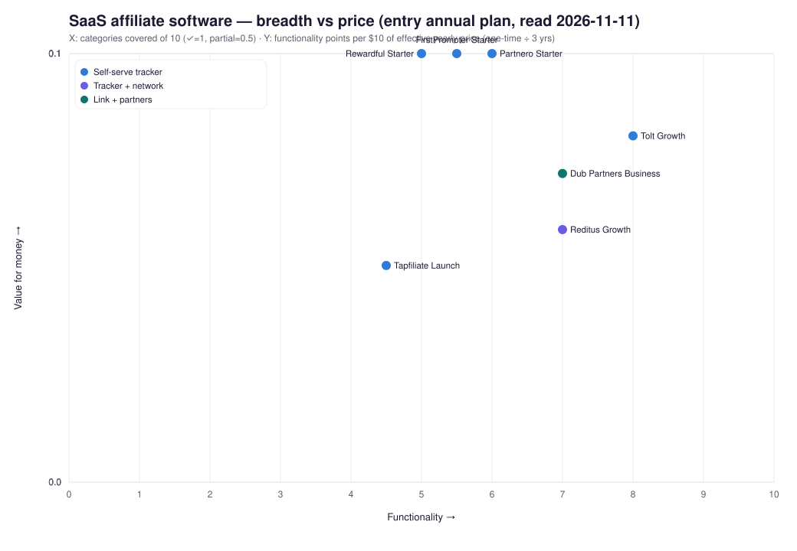

Affiliate / partner software cho SaaS: Dub Partners, Rewardful, Tolt, FirstPromoter, PartnerStack, Reditus
Kết luận có điều kiện: Đây không phải một thị trường, mà bốn job chồng lên nhau. Với SaaS muốn tự chạy chương trình affiliate gắn billing (Stripe/Paddle/Chargebee), cửa vào đã chật: Rewardful và FirstPromoter bán tracker rẻ ($49/tháng, $490/năm), Tolt bán payout + portal ngay gói đầu ($99), Dub Partners bán attribution + payout toàn cầu trên nền link ($81/năm hóa đơn nếu trả năm). PartnerStack và Reditus bán thêm hàng tồn affiliate (marketplace). Việc “làm thêm một Rewardful nữa” chỉ có ý nghĩa nếu giải được job tuyển affiliate hoặc payout/thuế tốt hơn, không phải nếu chỉ track link.
Câu hỏi quyết định. Cần biết các đơn vị này khác nhau thế nào về sản phẩm, giá, ICP, traction và nỗi đau khách hàng — để quyết định dùng, cạnh tranh, hay bỏ qua.
Giả định phạm vi. Buyer = công ty SaaS/subscription tự vận hành affiliate hoặc partner program. Địa lý: toàn cầu, tài liệu tiếng Anh. Tiền tệ: USD. Cắt ngày: 2026-11-11. Không sizing TAM vì các ước lượng analyst lệch định nghĩa ~20×.
1. Trả lời theo job, không theo logo
Ba job chiếm phần lớn willingness-to-pay:
- Tính hoa hồng recurring đúng với billing (upgrade, downgrade, refund, churn).
- Trả tiền affiliate toàn cầu + thuế (W-9 / 1099 / W-8) mà không mở spreadsheet.
- Tìm affiliate thật sự mang sale, không chỉ có portal đăng ký.
Cách chọn có điều kiện:
- Chỉ cần job 1, Stripe/Paddle Classic, ngân sách thấp: Rewardful Starter $49/tháng. CONFIRMED rewardful.com/pricing
- Cần Paddle Billing hoặc Chargebee, portal branded + payout tự động ngay gói đầu: Tolt Growth $99/tháng + 2% số trả affiliate. CONFIRMED tolt.com/pricing
- Cần attribution link-level, bounty CPC/CPL, payout 1-click, tax form: Dub Partners (Business trở lên). CONFIRMED dub.co/pricing
- Cần tuyển affiliate B2B từ mạng có sẵn: Reditus Scale Up ($399/tháng, chỉ năm, có listing) hoặc PartnerStack Launch+ (quote). Marketplace Reditus không nằm trên Growth. CONFIRMED getreditus.com/pricing
- Cần co-sell, deal registration, CRM, MDF: PartnerStack (hoặc impact.com / Impartner — adjacent). Tracker $49 không làm job này.
Cạnh tranh head-on với Rewardful/FirstPromoter/Tolt năm 2026 là cuộc chiến giá và migration (cả ba đều quảng cáo import 1-click). Wedge còn mở hơn nằm ở tuyển dụng affiliate chất lượng và unit economics payout, không nằm ở “dashboard đẹp hơn”.
2. Phân khúc và mẫu
Quy tắc đưa vào mẫu: bán phần mềm cho merchant SaaS để chạy chương trình affiliate/partner/referral của chính họ, hoặc mạng B2B giúp tuyển partner cho cùng job đó.
Trực tiếp (self-serve tracker):
- Rewardful
- Tolt (canonical tolt.com; tolt.io redirect)
- FirstPromoter
- Dub Partners (sản phẩm của Dub.co)
- Tapfiliate
- Partnero
- LeadDyno
Trực tiếp lai mạng:
- Reditus (getreditus.com) — tracker + mạng 28.000+ affiliate B2B SaaS VENDOR-CLAIMED
- PartnerStack — PRM + marketplace B2B
Liền kề:
- impact.com, Partnerize — partnership cloud enterprise
- Affise, Everflow, Trackdesk — performance network / tracker agency
- CJ, Awin, ShareASale — mạng publisher cổ điển
Thay thế:
- Cello, GrowSurf, Viral Loops, ReferralCandy — widget referral khách hàng / ecommerce
- Spreadsheet + Stripe + PayPal Mass Pay
Lẫn danh tính: Dub.co (Steven Tey, link attribution, OSS Capital $2M seed 2025-01-16) khác Dub copy-trading (dubapp.com / Steven Wang, Series A $30M). Mọi số funding $30M / $47M gắn “Dub” trong Dealroom/CB Insights phần lớn là công ty copy-trading.
3. Ma trận năng lực
Ký hiệu: C = thấy trên docs/pricing gốc; P = một phần / gói cao hơn / phụ thuộc bên thứ ba; ? = chưa đủ bằng chứng. Thiếu mention không được đọc thành “không có tính năng”.
| Hạng mục | Dub Partners | Rewardful | Tolt | FirstPromoter | PartnerStack | Reditus |
|---|---|---|---|---|---|---|
| Hoa hồng recurring theo billing | C Stripe | C Stripe; Paddle Classic | C Stripe, Paddle, Chargebee | C Stripe, Paddle, Chargebee, Recurly, Braintree | P (Spark: Stripe) | C Stripe; P API khác |
| Portal affiliate / custom domain | C; embed dashboard = Advanced+ | P Growth+ | C mọi gói | P Business+ | C | ? |
| Payout tự động toàn cầu trên gói vào cửa | C (5% ACH / 8% thẻ) | P bulk PayPal/Wise; Managed 3% | C (2% số trả ra) | P (batch; managed trên gói cao — không ghi % trên pricing) | C | C (5% thẻ / 2% invoice) |
| Thuế W-9 / W-8 / 1099 | C | ? | C mọi gói | C (homepage/FAQ) | C (vendor copy) | ? |
| Marketplace / tuyển affiliate | P Enterprise | ? | ? | ? | C Launch+ | P Scale Up / Enterprise năm |
| Referral in-app (user) | P Advanced embed | P | C | P | P | C mọi gói Growth+ |
| Deal registration / CRM co-sell | ? | ? | P lead thủ công | ? | C (Launch: chọn 1 trong 2) | P HubSpot (vendor) |
| Fraud / risk | P Advanced risk monitoring | P self-referral | P Radar ở Pro | C (vendor) | C (vendor) | C auto-reject |
| API / MCP | C REST + MCP | C API; Claude skill | C MCP mọi gói | P MCP beta | C AI + MCP | C API + webhook |
| Dual-sided / coupon | C | C | C | C | ? | C |
4. Giá đã chuẩn hóa
Tất cả số dưới đây lấy từ trang pricing gốc 2026-11-11 trừ khi gắn nhãn khác. Thuế VAT/GST cộng thêm. Gói năm Dub hiện $81 / $270 (giảm 10% so với $90 / $300 tháng).
| Vendor | Gói vào cửa | Năm (USD) | Meter / trần | Phí payout | Trial |
|---|---|---|---|---|---|
| Dub Partners | Business $81/tháng năm; $90 tháng | 972 | $30k payout/năm; 500 partners | 5% ACH / 8% thẻ (Ent 3% / 6%) | 14 ngày |
| Rewardful | Starter $49; Growth $99; Ent $149+ | 490 / 990 / 1,490+ | $7.5k / $15k / $30k+ affiliate-attributed revenue/tháng | 0% trên doanh thu; Managed Payouts 3% | 14 ngày |
| Tolt | Growth $99; Pro $199; Ent custom | 990 nếu 12=10 | $20k / $50k partner revenue/tháng | 2% số trả affiliate | 14 ngày, không thẻ; hoàn 30 ngày |
| FirstPromoter | Starter $49; Business $99; Ent $149 | 490 / 990 / 1,490 | $5k / $15k / trên $15k affiliate revenue/tháng; Starter 1.000 affiliates | Không ghi trên pricing | 14 ngày, không thẻ |
| Reditus | Growth $99 năm hoặc $149 tháng | 1,188 | $60k ARR tạo qua Reditus (không phải ARR công ty) | 5% thẻ / 2% invoice | 14 ngày, không thẻ |
| Reditus Scale / Ent | $399 / từ $799, chỉ năm | 4,788 / từ 9,588 | $360k ARR / không trần | Như trên | Demo |
| PartnerStack Spark | $0 subscription | 0 + biến phí | 1 user; Stripe sale tracking | 10% hoa hồng trả ra CONFIRMED spark page | Self-serve |
| PartnerStack Launch–Ent | Quote | Vendr median 19,616 SECONDARY | Quy mô chương trình | Không công bố trên pricing | Demo; không trial công bố |
| Tapfiliate Launch | $89 tháng / $74 năm | 890 | 50 affiliates; 5k click; 500 conv | Overage $1.50/1k click, $15/1k conv | 14 ngày |
Xung đột nguồn (không lấy blog khi trang gốc khác):
- Nhiều bài 2026 vẫn ghi Tolt Basic $69 — trang tolt.com/pricing 2026-11-11 không còn gói đó.
- AffiliateRail 2026-09 ghi Dub $90 / $2.5k payout/tháng; trang năm hiện $81 và $30k payout/năm (cùng band, khác cadence).
- Help cũ Reditus (2026-05) ghi Growth $139; live là $99 năm / $149 tháng.
- Vendr (cập nhật Feb 2026) median PartnerStack $19,616/năm trên 53–62 deal, range $9,186–$37,770. Đây là hợp đồng ẩn danh, không phải list price. Vendr vẫn nói “Starter $500–$800/tháng” — lệch tên gói so với Launch/Growth/Enterprise trên site 2026-11.
Unit economics — kịch bản $10k/tháng doanh thu do affiliate
Giả định: 20% hoa hồng → $2,000 payout/tháng. ASSUMPTION
| Vendor (gói đủ trần) | Subscription/tháng | Phí payout | Tổng vendor/tháng | Ghi chú |
|---|---|---|---|---|
| FirstPromoter Business | 99 | 0 (tự trả) | 99 | Starter trần $5k nên phải lên Business |
| Rewardful Growth + tự trả | 99 | 0 | 99 | Starter trần $7.5k |
| Rewardful + Managed 3% | 99 | 60 | 159 | 3% × 2,000 |
| Tolt Growth | 99 | 40 | 139 | 2% × 2,000; trần $20k còn dư |
| Dub Business ACH | 90 (tháng) / 81 (năm) | 100 | 190 / 181 | 5% × 2,000; trần $2.5k/tháng tương đương |
| Dub Business thẻ | 90 | 160 | 250 | 8% × 2,000 |
| Reditus Scale invoice | 399 | 40 | 439 | ARR qua Reditus $120k > trần Growth $60k |
| PartnerStack Spark | 0 | 200 | 200 | 10% × 2,000; 1 user |
Ở volume này, tracker tự payout (Rewardful/FirstPromoter) rẻ hơn Dub/Tolt/Reditus. Dub/Tolt thắng khi buyer trả tiền để khỏi làm payroll affiliate. Reditus Scale chỉ hòa nếu marketplace mang affiliate mà team không tự tuyển được.
5. Biểu đồ positioning (heuristic)
X = số hạng mục rubric (10) được cover trên gói vào cửa so sánh được. Y = điểm rubric / $10 năm. PartnerStack Launch–Ent bị loại khỏi plot vì không có list price so sánh được. Điểm Y gần nhau vì mọi gói vào cửa đã $490–$1,188/năm — heuristic này thiên vị tool rẻ hẹp, không phải bảng xếp hạng chất lượng.

6. Công ty, funding, traction
Funding ≠ valuation. GMV affiliate của khách ≠ ARR của vendor. TrustMRR: không thấy profile connected cho sáu tên chính.
| Công ty | Founded / HQ / founder | Vốn / M&A | Doanh thu vendor | Traction công bố |
|---|---|---|---|---|
| Dub.co | OSS ~2022, cty ~2024; Steven Tey (ex-Vercel) | $2M seed 2025-01-16, OSS Capital + angels (Rauch, Koen Bok, …) CONFIRMED TechCrunch | ARR cty không công bố. Founder: 8× ARR 2025; profitable 12 tháng (X 2026-08-12) VENDOR-CLAIMED | Partners GA 2025-08; $25M paid out sau 1 năm; logos Framer, Superhuman, Granola, Polymarket |
| Rewardful | 2017 Edmonton; Kyle Fox, Brady Cassidy; CEO mới Nikola Bubevski (X 2026-11-02) | Mua bởi saas.group 2021-11, giá không công bố | GetLatka $2.8M năm, Aug 2024, “CEO confirmed” SECONDARY | 3,000+ teams trên pricing; careers từng ghi 2,600 |
| Tolt | 2022; Daniel & Valentin Gjokaj | LAUNCH / Jason Calacanis ~$100k seed 2024 SECONDARY | ARR Tolt không công bố. “$200M+ ARR” trên site là ARR khách (OpenArt) | HeyReach case $3.1M+ partner revenue VENDOR-CLAIMED |
| FirstPromoter | 2017 Romania; Virgil Cioaca; Igil Webs SRL | Bán cho SpringWater (Vilnius) Sep 2025, giá không công bố SECONDARY | Không công bố | 3,000+ SaaS trên pricing 2026-11 |
| PartnerStack | 2015 Toronto (GrowSumo); YC S15; Bryn Jones CEO | ~$38–50M raised; Series B $29M 2021; post $116M (PitchBook qua The Logic). AppDirect mua 2026-04-14; BetaKit ẩn danh ~$150M+ chủ yếu cổ phiếu | ARR lúc exit không công bố | 138k+ partners; $3B revenue cho khách VENDOR-CLAIMED tại deal |
| Reditus | 2020 NL; Joran Hofman; Reditus B.V. | Bootstrap; không thấy round. Một thương vụ M&A đổ (podcast saas.group 2025) | Không công bố | 200+ B2B SaaS teams; $11M+ generated; 28k affiliates VENDOR-CLAIMED |
| impact.com (adjacent) | 2008 Santa Barbara | $150M 2021 tại valuation $1.5B CONFIRMED | >$100M ARR lúc raise 2021 | Vẫn private 2026 |
Mẫu M&A: tracker SMB bị PE/rollup mua (Rewardful, FirstPromoter, Tapfiliate→Admitad, LeadDyno→SureSwift). PRM mid-market đã exit (PartnerStack→AppDirect). Hai tên đang lấy share 2025–26 trên logo khách là Dub Partners và Tolt — ARR công ty vẫn mờ.
7. Bằng chứng khách hàng
Review tự chọn, không phải lỗi đã chứng minh. G2 đọc qua Bright Data 2026-11-11. Trustpilot qua r.jina.ai. Reddit proxy trả 0 thread hữu ích cho sáu query (nhiều hit web_search là promo vendor).
| Sản phẩm | G2 | Capterra | Trustpilot | Chủ đề lặp |
|---|---|---|---|---|
| PartnerStack | 4.7 / 959 (5★ 83%; 1★ ~3) | 4.8 / 94 | 1.7 / 62 | G2 (nhiều seller-invite): marketplace, payout tập trung. Trustpilot 1★: hoa hồng mất, status Sent vs processing, cấm tài khoản, “$130k/năm zero ROI”. KYC/thuế mơ hồ (G2 Dmytro L.). |
| Rewardful | 4.5 / 86 (1★ 1%) | 5.0 / 4 | 0 review | Thuận: Stripe/Paddle setup. Pain: payout PayPal tay (16 mention “Payment Issues”); giá theo volume dù không dùng Managed Payouts (Carl H. 2026-06-06); không marketplace (Surya Dev S.). HN 2025: cookie bị chặn, Paddle support thay đổi. |
| Tolt | 4.6 / 36 (0% dưới 4★) | 5.0 / 19 | 3.7 / 1 | Thuận: live Stripe <15 phút; auto PayPal/Wise. Pain trong 4★: mất data khi migration Nov 2025–Jan 2026 (Mallik G., seller-invite); giá cao với team muốn ~$20/tháng. N sạch bất thường — không suy ra zero defect. |
| FirstPromoter | 4.6 / ~29–37 | 4.9 / 7 | 4.6 / 23–25; 0× 1★ | Thuận: support có tên (Prince, Harvey). Pain: không marketplace; tracking trial fail (TP 2★). Một reviewer Capterra 2021 chọn Reditus vì có mạng. |
| Reditus | ~4.8 / ~64 | 4.7 / 27–28 | 4.5 (nhiều review affiliate 2026) | Thuận: một login cho nhiều program B2B. Pain: PayPal default, threshold từng program, catalog hẹp. Overview G2 do founder viết — flag. Free plan đã thành trial 14 ngày. |
| Dub (slug dub) | 4.9 / ~24 | ? | ? | Trộn link shortener và Partners. Pain: “not cheap”, rate limit free. N quá nhỏ. |
| Tapfiliate | 4.3 / 57–58 | ? | ? | 1★: “no scam filters”, export kém, gói Launch hạn chế. |
| impact.com | 4.4 / 2,812 | ? | ? | Onboarding phức tạp, đắt, chậm duyệt brand — buyer enterprise khác. |
Pain xuyên suốt (không phải tỷ lệ thị trường):
- Payout: Rewardful historically tay; PartnerStack Trustpilot delay/mất số; Reditus PayPal + ngưỡng từng program; Tolt được khen auto-payout.
- Thuế/KYC: PartnerStack rút tiền bị cổng location; Tolt bán W-9/1099 như điểm khác biệt.
- Khóa billing: Rewardful/Tolt/FP sống nhờ Stripe/Paddle/Chargebee. HN: cookie/ad-block làm click không ghi nhận.
- Marketplace vs phòng trống: PartnerStack/Reditus/impact tuyển hộ; Rewardful/FP/Tolt tự tuyển.
- Giá nhảy theo volume (Rewardful) hoặc quote (PartnerStack). AddSearch (case Rewardful) nói cắt ~90% chi phí khi rời PartnerStack — vendor case, không audit.
- Chất lượng affiliate/spam: Rewardful phải xóa spam; một user chuyển Impact→PartnerStack vì applicant fraud.
Reddit r/rewardful, r/FirstPromoter_APP, Superframeworks 2026 và comment u/Damjan_Tolt / u/Rewardful là promo. Số “Tolt $29 / Rewardful free 50 affiliates” trên thread đó đã sai so với pricing gốc 2026-11-11.
8. Đơn vị tương tự đáng đưa vào shortlist
- Tapfiliate — $89 Launch, meter click/conversion, mạnh ecommerce+SaaS lai; Admitad sở hữu từ 2021.
- Partnero — $49–$59 Starter, unlimited partners, managed payout 7%.
- LeadDyno — meter số affiliate ($49/50 aff); SureSwift mua.
- Affonso / PromoteKit — cửa vào thấp hơn ($15–$39); pricing primary chưa re-open đủ trong pass này.
- Cello — PLG in-app referral, không phải affiliate network.
- impact.com — Essentials $500/tháng; Starter $30+2.5% chỉ ecommerce; ACV enterprise.
9. Rủi ro, gap, số bị loại
- Không dùng: $420k / $1.4M ARR gắn Dub.co từ blog bên thứ ba; $30M Series A của dubapp.com; TBRC “affiliate software $29B” (lẫn ad spend); Dealroom revenue PartnerStack nội bộ mâu thuẫn.
- Upstream: Mọi tracker SaaS sống nhờ Stripe/Paddle/Chargebee. Đổi processor = dự án migration.
- Downstream: Cookie last-click + Honey-style attribution theft là lý do Dub định vị “link chứa offer”. Cookie window Dub trên pricing không trích được số ngày trong pass này — secondary hay nói 90 ngày last-click.
- Churn tourist: Gói meter theo affiliate revenue: chương trình chết thì bill tụt, vendor chịu. Gói quote PartnerStack: buyer chịu contract năm.
- G2: body Rewardful/Tolt/PartnerStack đọc qua Bright Data; 1★ Tolt/FP gần như không có trên G2. Capterra Cloudflare một phần.
- SOC2/ISO: chưa kiểm certificate issuer.
10. Bước tiếp theo (thí nghiệm, không phải bắt buộc)
- Nếu mục tiêu là dùng cho sản phẩm SaaS của mình: trial 14 ngày Tolt và Rewardful song song trên cùng Stripe test mode; đo thời gian ra payout đầu và sai số hoa hồng khi refund.
- Nếu mục tiêu là vào thị trường: đừng copy tracker $49. Phỏng vấn 5 người đang trả PartnerStack hoặc Reditus Scale về việc tuyển affiliate — đó là job đắt. Landing waitlist chỉ có ý nghĩa nếu promise là “affiliate B2B đã vet + payout thuế”, không phải “dashboard affiliate”.
- Re-open G2 1★ khi Bright Data hết limit; đọc PartnerStack MSA (phí unclaimed commission, tăng 7% renewal — mới chỉ thấy ở blog đối thủ).
11. Nguồn chính (access 2026-11-11)
- dub.co/pricing · partner payouts · Introducing Dub Partners 2025-08-12 · TechCrunch seed $2M
- rewardful.com/pricing · saas.group acquire 2021-11
- tolt.com/pricing
- firstpromoter.com/pricing
- getreditus.com/pricing · help pricing
- partnerstack.com/pricing · Spark · BetaKit AppDirect 2026-04-14 · Vendr ACV
- tapfiliate.com/pricing · impact.com/pricing